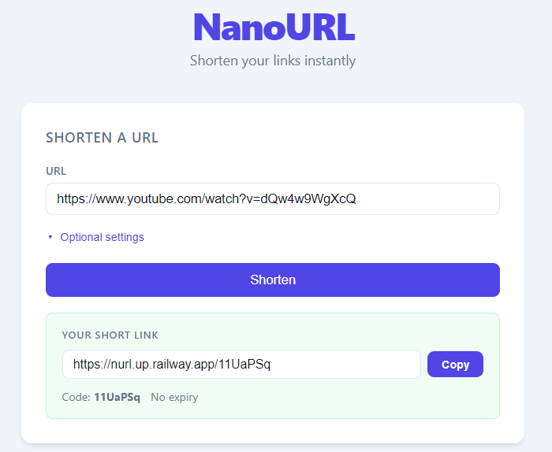

NanoURL
A URL shortener built with Spring Boot, featuring a REST API, a Thymeleaf/HTMX web UI.

Overview
NanoURL converts long URLs into compact 7 character codes that redirect to the original destination. Users can shorten a link, optionally assign a custom alias, and set an expiry window. All through either a clean web interface or a documented REST API. Every redirect registers a hit counter atomically, making the stats accurate even under heavy concurrent traffic.
The backend is built on Spring Boot 4 with Spring Data JPA and Hibernate Validator. The frontend is a single Thymeleaf page that uses HTMX for form submissions and Hyperscript for small UI interactions, delivering a snappy experience without a JavaScript framework. H2 in-memory database is used for local development and PostgreSQL on Supabase for production, with the application containerised via Docker and deployed on Railway.
View source on GitHub Live demo
Features
- URL Shortening: Generates cryptographically random 7 character Base62 codes with roughly 3.5 trillion possible values, making accidental collisions negligible.
-
Custom Aliases: Users can claim a memorable alias (3 to 32 characters,
[A-Za-z0-9_]) instead of a generated code. - Link Expiry: Optional expiry window of 1 to 365 days. Expired links return 404 and are filtered out at lookup time.
-
Atomic Hit Counting: Every redirect increments the hit counter with a single
JPQL
UPDATE ... SET hits = hits + 1statement, eliminating lost updates under concurrent requests. -
REST API with OpenAPI Docs: Full CRUD-style API documented with springdoc-openapi
and browsable at
/swagger-ui.html. - HTMX Web UI: Form submissions and lookups return server-rendered Thymeleaf fragments that HTMX swaps into the page. No full-page reload, no client-side routing.
-
URL Normalisation: Bare hostnames like
example.comautomatically get anhttps://prefix. Non-HTTP(S) schemes are rejected. -
Global Exception Handling: A
@RestControllerAdvicemaps validation failures and business rule violations to clean 400 responses with descriptive messages.
Tech stack
Java 25 • Spring Boot 4 • Spring Data JPA • Hibernate Validator • Lombok • Thymeleaf • HTMX • Hyperscript • springdoc-openapi • PostgreSQL (prod) • H2 (dev) • Supabase • Docker • Railway • JUnit 5 • Mockito • AssertJ
Problem Statement
I struggled to find projects to get into the Java Spring boot headspace. Most of my projects can be done via NextJS alone. But I wanted to do projects with spring boot to consolidate my skills in Spring boot. This is where a URL shortener comes into play. A URL shortener looks trivial on the surface i.e. Store a mapping, look it up, redirect.
But its actually complex enough for a complete backend implementation. For example, how do you count hits accurately when dozens of requests arrive for the same link at once? How do you guarantee code uniqueness without introducing a race condition between the existence check and the insert? And how do you keep the codebase correct as it grows, so that subtle bugs introduced in one layer don't silently survive all the way to production?
The goal was to build a URL shortener that is not just functional but genuinely correct but one where the concurrency story is thought through, the validation is airtight, and every design decision can be justified.
Solution
Short codes are generated by Base62.randomCode(), which seeds a
SecureRandom byte buffer and encodes it via BigInteger arithmetic into the
[0-9A-Za-z] alphabet. Using SecureRandom rather than
ThreadLocalRandom ensures the output is unpredictable which is important
when codes double as the sole access control for a link.
Code uniqueness is enforced by the database, not by an application-level pre-check.
UrlService.create() attempts to save directly and catches
DataIntegrityViolationException on the unique constraint. For generated codes
it retries up to ten times with a fresh code. For custom aliases it surfaces the collision
immediately as a 400. This eliminates the time-of-check/time-of-use (TOCTOU) window
that would exist if the code checked existsByCode before inserting.
Hit registration uses an atomic JPQL update,
UPDATE ShortUrl SET hits = hits + 1, lastAccessedAt = :now WHERE code = :code
rather than a read-modify-write cycle. The query carries @Modifying(clearAutomatically = true)
so the JPA first-level cache is invalidated after the update, and @Transactional
directly on the repository method ensures a transaction is always present.
The web UI is driven entirely by HTMX. The shorten and lookup forms post to
PageController, which returns Thymeleaf partial fragments
(fragments/results :: shorten-result, lookup-result,
error-result) that HTMX swaps into the page. Hyperscript handles the
small UI details like disabling the submit button during a request and toggling the
optional-settings panel, keeping the HTML declarative without reaching for a framework.
Challenges Faced
-
Concurrency in Hit Counting: The first implementation loaded the entity,
incremented
hitsin Java, and saved it back. Under concurrent requests this is a classic read-modify-write race: two threads read the same value, both increment it, and the last write wins. Recognising the problem meant switching to a single atomic database operation and auditing the rest of the codebase for the same pattern. -
TOCTOU on Code Uniqueness: The original code used
existsByCodeto check availability before saving. Between the check and the insert another request could claim the same code, making the check useless as a guarantee. Moving the authority to the database constraint and handling the violation at the save site solved both the race and the excess round-trips. -
JPA Cache Staleness After Bulk Updates: A
@ModifyingJPQL update bypasses the JPA first-level cache. WithoutclearAutomatically = true, entities loaded earlier in the same session would show stale hit counts. A silent correctness bug that only surfaces under specific access patterns. -
Layered Validation: Bean Validation on the DTO and business-rule checks in the
service can duplicate effort or, worse, contradict each other. The alias pattern
(
^[A-Za-z0-9_]{3,32}$) needed to live in one canonical place and be referenced consistently so that no invalid input could slip through one layer and fail unexpectedly in another. -
Correct HTTP Semantics: Small details like returning 201 Created with a
Locationheader on resource creation, and typing themap()lambda correctly forResponseEntity<Void>, required deliberate attention. These are easy to overlook but matter to any client that follows the spec. -
Railway Deployment Without a Dockerfile: Railway's buildpack
auto-detection failed to build the Spring Boot application, producing a deployment
error with no clear fix in the platform settings. Writing an explicit multi-stage
Dockerfile using
eclipse-temurin:25-jdkto compile andeclipse-temurin:25-jreas the slim runtime image resolved the issue and gave full control over the build environment.
Lessons Learned
- The Database is the Authority on Uniqueness: Pre-checking availability before inserting feels safe but creates a TOCTOU gap. The correct pattern is to attempt the insert, let the constraint enforce uniqueness, and handle the violation explicitly. This is simpler, faster, and actually correct.
- Never Update a Counter with a Read-Modify-Write: Any field incremented under concurrent load must be updated with a single atomic database statement. A read-modify-write cycle looks correct in single-threaded tests and fails silently in production which makes it particularly dangerous.
-
JPA Abstractions Have Sharp Edges:
@Modifyingqueries bypass the first-level cache, and@Transactionalis not automatically inherited from the repository interface. Understanding what the framework does not do for you is as important as knowing what it does. - Validate at the Right Layer: Bean Validation on the DTO is the first line of defence and the right place for format and range checks. Business rules like alias availability belong in the service. Duplicating either in the wrong layer produces dead code or contradictions.
- Explicit Dockerfiles Beat Buildpack Magic: Platform auto-detection is convenient until it fails with an opaque error. Writing a Dockerfile takes minutes and pays back immediately in reproducibility as the same image that passes local testing is exactly what runs in production.
- Code Review Surfaces Subtle Bugs: Several of the most consequential issues in this project e.g. the race condition, the TOCTOU gap, the stale cache were not visible in unit tests and only surfaced during a structured code review, reinforcing that testing and review are complementary disciplines. Tests verify behaviour, review catches design level correctness.
Results
NanoURL delivers a correct, well-tested implementation of a URL shortener that holds up
under concurrent load. The hit counter is accurate, code uniqueness is guaranteed by the
database, expired links are cleanly filtered, and the API follows HTTP conventions.
The test suite covers the service, repository, and controller layers with a mix of
unit tests (Mockito + AssertJ) and slice tests (@DataJpaTest, MockMvc).
Building this project sharpened my understanding of JPA transaction and cache semantics, correct concurrency patterns in a relational database context, and what it means to design an API that is predictable for its clients.